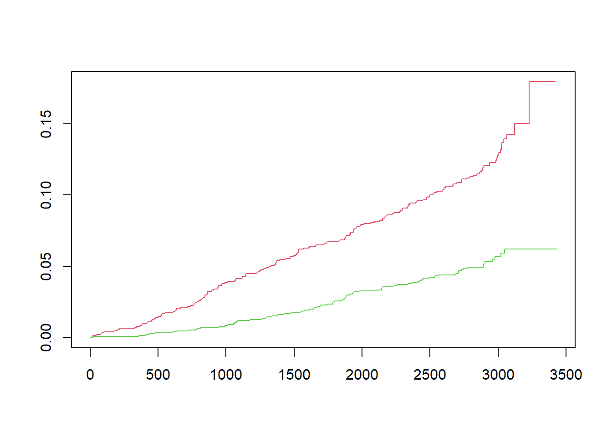
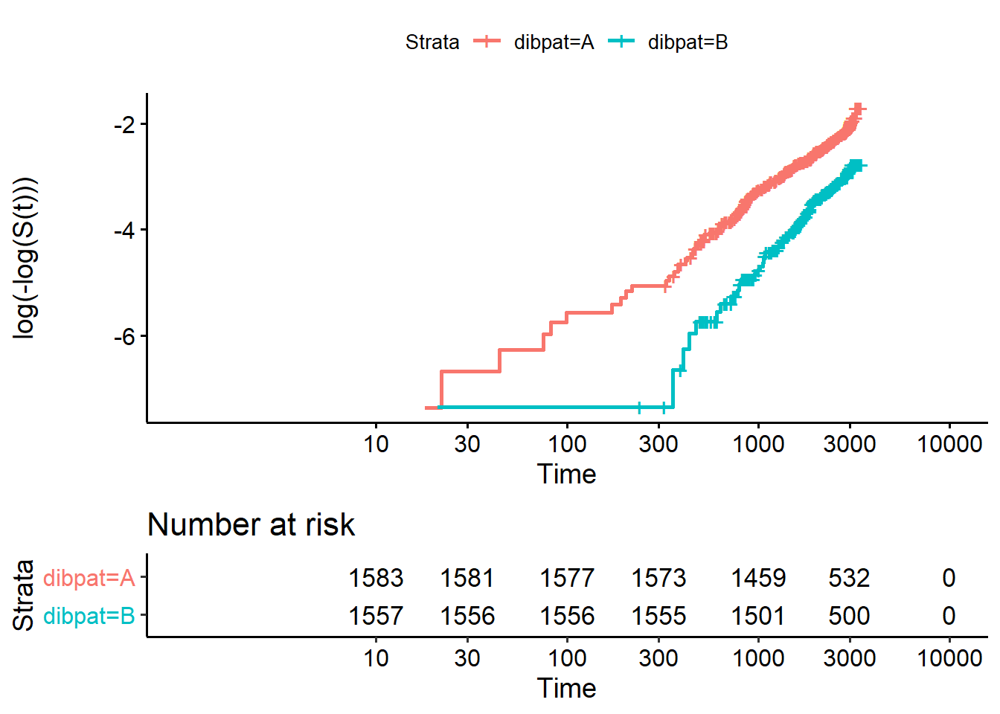

Chapter 4 Cox líkanið
Cox kom með ákveðna aðferð til að smíða likelihood fall fyrir lifunargreiningu, sjá:
Cox, David R (1972). “Regression Models and Life-Tables”. Journal of the Royal Statistical Society, Series B. 34 (2): 187–220.
Aðferðin fellst í því að nota líkan fyrir hættufallið \(h(t)\) út frá skýribreytum þannig að grunn-hættufallið (basline hazard) er margfaldað með línulegri samantekt af skýribreytum með veldis-tengifalli.
\[ h(t) = h_0(t) \exp(\beta_1 x_1 + \cdots + \beta_p x_p), \] Athugið að þegar allar skýribreytur eru með gildið 0 þá er \(h(t) = h_0(t)\). M.ö.o. grunn-hættufallið fæst með því að stilla allar skýribreytur á 0 (Því er oft gott að draga meðaltalið frá gildunum eins og við gerðum fyrir aldur).
Takið svo eftir að logrinn af hættuhlutfallinu er línuleg samantekt af skýribreytum.
\[ \log \left( \frac{h(t)}{h_0(t)} \right) = \beta_1 x_1 + \cdots + \beta_j x_j + \cdots + \beta_p x_p. \]
Hækkum nú \(x_j\) um eina einingu og skrifum
\[ \log \left( \frac{h'(t)}{h_0(t)} \right) = \beta_1 x_1 + \cdots + \beta_j ( x_j+1) + \cdots + \beta_p x_p. \] þar sem \(h'\) táknar hér hættufallið miðað við að \(x_j\) hafi hækkað um eina einingu. Hér er ekki verið að diffra, heldur er komman notuð til að merkja \(h\).
Drögum svo vinstri hliðar og hægri hliðar að ofan frá jöfnunni sem við vorum að skrifa. Þá fæst
\[ \log \left( \frac{h'(t)}{h(t)} \right) = \beta_j. \]
Hættuhlutfallið þegar \(x_j\) hækkar um eina einingu er þar með \(e^{\beta_j}\) eða \(\exp(\beta_j)\). Hefðum við hækkað \(x_j\) um \(\Delta\) einingar væri hættuhlutfallið \(\exp(\Delta \beta_j)\).
Takið eftir hvernig \(h_0\) styttist út í svona útreikningum. Hér notum við að \(\log(u) - \log(v) = \log(\frac{u}{v})\) og að
\[ \log(a/c) - \log(b/c) = \log \left(\frac{a}{c} \cdot \frac{c}{b} \right) = \log \left(\frac{a}{b} \right). \]
Cox notar svo skilyrt líkindi \(P(A|B) = P(A \cap B) / P(B)\) til að búa til hálíknafallið og nýtir sér að \(h_0\) styttist út. Við leitum svo með tölulegum aðferðum af því gildi á \(\boldsymbol{\beta}\) sem hámarkar það fall. Það er ekkert sem segir að \(\boldsymbol{\beta}\) þurfi að vera eins yfir allan tímaskalann.
Cox líkanið er í raun relative risk model og það eru óþarfa hömlur að hugsa um Cox líkanið sem proportional hazards líkan. Það má auðveldlega leyfa áhrifum skýribreytna að breytast í tíma sem og gildunum á þeim.
Við byrjum á því að gera Cox-líkanið fyrir persónuleikagerðirnar án nokkurra frekari skýribreytna. Notum daga sem tímaeiningu.
!!! ATH, hvernær notum við ties = “breslow”?
Prófum hvort hlutfallsleg áhætta gildir með því að meta leitnina í hættuhlutfallinu yfir tíma. Ef hlutfallslega áhætta gildir þá ætti beta(t) fallið að vera lárétt lína.
 Leitnin er niður á við þ.e. hættuhlutfallið minnkar með tímanum. Lækkunin er þó ekki marktæk tölfræðilega. Sem staðfestir að okkur er óhætt að nota Cox-líkanið.
## chisq df p
## dibpat 2.6 1 0.11
## GLOBAL 2.6 1 0.11!!! ATH, setja frekari útskýringar varðandi myndina og töfluna fyrir ofan.
!!! ATH, þetta er í raun sama myndin en með transform = “rank”, hvaða áhrif hefur það?

Skoðum nú niðurstöðu Cox-líkansins fyrir áhættuhlutfallið og berum saman við fyrri niðurstöður. Samkvæmt Cox er áhættuhlutfallið 0.43 og öryggisbilið ( 0.33, 0.56). Við fengum sama áhættuhlutfall með handreikningi og með því að gera ráð fyrir veldisvísidreifingu. !!! ATH er það rétt skilið hjá mér að það sé ekki rétt að reikna áhættuhlutfall fyrir Kaplan Meier metilinn?
Skoðum núna Cox-líkanið fyrir BMI, getum hérna notað upphaflegu samfelldu breytuna.
## Call:
## coxph(formula = Surv(surv_time, status) ~ bmi, data = wcgs_dat)
##
## coef exp(coef) se(coef) z p
## bmi 0.08863 1.09268 0.02294 3.863 0.000112
##
## Likelihood ratio test=14.1 on 1 df, p=0.0001731
## n= 3140, number of events= 255Prófum hvort hlutfallleg áhætta gildir með því að meta leitnina í hættuhlutfallinu yfir tíma.
## chisq df p
## bmi 4.17e-06 1 1
## GLOBAL 4.17e-06 1 1
Niðurstaðan er að hlutfallsleg áhætta virðist einnig halda fyrir bmi.
Reyndar er niðurstaðan sú sama fyrir allar helstu breytur í þessu gagnasafni. Sjáum það þegar við gerum Cox-aðhvarfslíkanið með mörgum skýribreytum.
Cox_3 <- coxph(Surv(surv_time, status) ~ agec + cholmmol + sbp10 +smoker + bmi + dibpat + arcus0 , data = wcgs_dat)
Cox_3## Call:
## coxph(formula = Surv(surv_time, status) ~ agec + cholmmol + sbp10 +
## smoker + bmi + dibpat + arcus0, data = wcgs_dat)
##
## coef exp(coef) se(coef) z p
## agec 0.05719 1.05886 0.01135 5.040 4.64e-07
## cholmmol 0.32339 1.38181 0.04137 7.817 5.39e-15
## sbp10 0.18436 1.20245 0.03802 4.849 1.24e-06
## smokerYes 0.61075 1.84182 0.13192 4.630 3.66e-06
## bmi 0.05681 1.05846 0.02443 2.325 0.0201
## dibpatB -0.66644 0.51353 0.13711 -4.861 1.17e-06
## arcus0 0.21561 1.24061 0.13223 1.631 0.1030
##
## Likelihood ratio test=198.4 on 7 df, p=< 2.2e-16
## n= 3140, number of events= 255## chisq df p
## agec 1.4371 1 0.23
## cholmmol 0.3531 1 0.55
## sbp10 0.0032 1 0.95
## smoker 0.7884 1 0.37
## bmi 0.0692 1 0.79
## dibpat 2.1032 1 0.15
## arcus0 0.5778 1 0.45
## GLOBAL 5.7704 7 0.57Öll p-gildin eru vel yfir 0.05 sem bendir til þess að hlutfallsleg áhætta gildir fyrir allar þessar breytur.
Lifunarlíkanið sem við fáum ef við notum allar þessar breytur er \(h_{1}(t)=e^{0.0572*agec+0.3234*cholmmol+0.1844*sbp10+0.6108*smoke+0.0568*bmi+-0.6664*dibpat +0.2156*arcus}*h_{0}(t)\) Þar sem \(h_{0}(t)\) er hazard-fallið þegar allar samfelldu breyturnar eru 0, sem þýðir að upphaflega aldursbreytan er 46, reykingar og arcus eru nei og hegðunarhópurinn er B.
Þegar líkönin eru borin saman sést að stuðullinn fyrir bmi í óleiðrétta líkaninu er 0.0886 og í því leiðrétta 0.0568. !!! ATH segja eitthvað meira um túlkun á þessu.